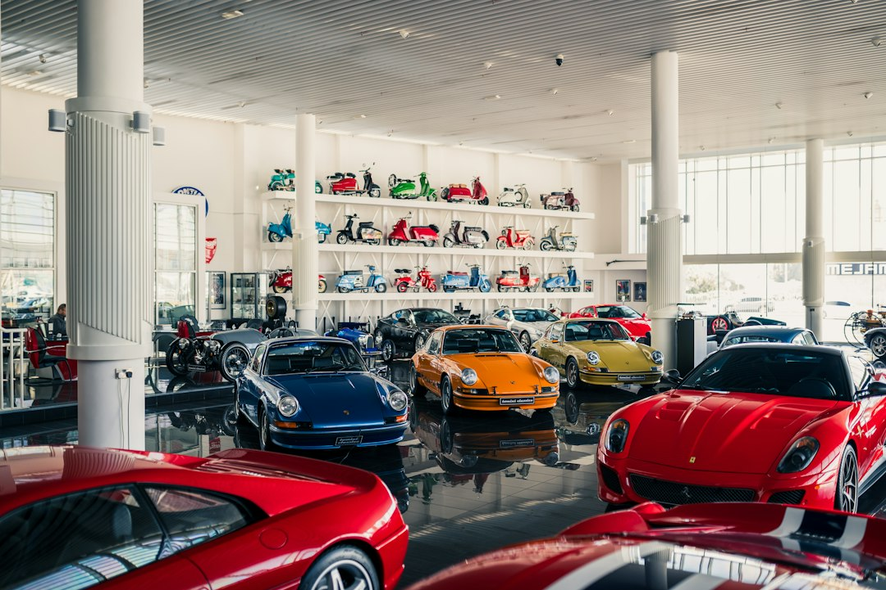

Come Ridurre Sprechi di Tempo e Costi Gestionali nei Saloni Auto con DriveMotion AI

Ottimizzare la gestione degli annunci usati: Soluzioni pratiche per Concessionari Auto e Saloni Usato con DriveMotion AI
- Gli sfondi poco attraenti nei piazzali penalizzano la percezione del veicolo e l’efficacia commerciale degli annunci.
- Il tempo e i costi spesi nel tentativo di migliorare visivamente le foto e i video sono spesso elevati e poco efficienti.
- DriveMotion AI automatizza la creazione di video promozionali con sfondi di lusso e narrazione integrata, riducendo drasticamente tempi e costi.
Analisi approfondita della notizia e delle implicazioni operative
Nel settore automotive, soprattutto per concessionari auto, saloni di usato e professionisti dedicati, l’estetica degli annunci online è diventata un fattore decisivo per il successo commerciale. La diffusione crescente di piattaforme social e marketplace dedicati all’usato ha rivoluzionato il modo di proporre i veicoli, richiedendo immagini e video di alta qualità. Tuttavia, la realtà dei piazzali spesso non rispecchia questo requisito: sfondi poco curati, spazi con pavimentazioni rovinate, elementi visivi distrattivi o semplicemente poco professionali abbassano di molto l’appeal degli annunci.
Questa situazione genera una serie di problematiche operative rilevanti. La mancanza di un ambiente visivamente adeguato costringe i team a investire tempo in allestimenti temporanei o fasi di editing manuale, spesso onerose e non scalabili. Ciò comporta inefficienze in termini di gestione del lavoro e allungamento dei tempi di pubblicazione dell’annuncio, con un impatto negativo sulle vendite e sul ROI delle attività di marketing.
Le conseguenze e i costi di non agire
Piazzali con sfondi poco attraenti rappresentano un vero collo di bottiglia per il marketing digitale nel settore auto. Senza un’immagine del veicolo che risalti per design e contesto, la percezione del valore diminuisce. Questo si traduce in minor interesse e interazioni sulle piattaforme social, con più tempo sprecato nel rincorrere annunci poco efficaci.
Dal punto di vista economico, i costi vissuti sono distribuiti soprattutto tra ore uomo impiegate in editing, allestimenti fotografici e produzione video, nonché investimenti pubblicitari che non raggiungono la giusta conversione. Inoltre, i ritardi nelle pubblicazioni incidono direttamente sul flusso di vendita e sulla capacità di smaltire il parco usato. Tutto ciò genera un circolo vizioso di incremento delle spese gestionali senza risultati tangibili.
Come DriveMotion AI risolve il problema
DriveMotion AI, soluzione SaaS sviluppata da RM Studio, rappresenta un’importante svolta tecnologica pensata appositamente per superare queste criticità. La piattaforma utilizza un motore di intelligenza artificiale avanzata per rimuovere lo sfondo originale del piazzale e sostituirlo con dieci ambientazioni di lusso, quali showroom moderni, loft raffinati o scenari futuristici notturni cyberpunk, valorizzando così l’auto in modo spettacolare e altamente professionale.
Grazie a una tecnologia completamente automatizzata, DriveMotion AI genera video promozionali in alta definizione con narrazione integrata che racconta i punti di forza dell’auto in modo accattivante e coinvolgente, senza la necessità di servizi fotografici complicati o post-produzioni manuali. Questa riduzione drastica dei passaggi manuali si traduce in un notevole taglio di sprechi di tempo e costi, favorendo una pubblicazione molto più rapida degli annunci e un miglioramento tangibile nella loro efficacia commerciale.
Inoltre, i pacchetti Pay-As-You-Go da €14.90 consentono anche ai professionisti con budget contenuti di usufruire di contenuti di altissima qualità senza investimenti fissi o abbonamenti onerosi, portando la trasformazione digitale direttamente nelle mani degli operatori del settore automotive.
| Aspetti | Gestione Tradizionale | Con DriveMotion AI |
|---|---|---|
| Qualità visuale degli sfondi | Limitata a piazzali fisici spesso trascurati | Ambientazioni di lusso in alta definizione (Showroom, Loft, Notte Cyber) |
| Tempi di produzione contenuti multimediali | Ore di allestimenti, foto e post-produzione manuale | Video automatici con sfondo sostituito in pochi minuti |
| Costi di realizzazione contenuti | Alti tra shooting, ritocchi, personale dedicato | Soluzione Pay-As-You-Go da €14.90 per video HD |
| Attrattività degli annunci usati | Spesso bassa a causa di background poco professionali | Elevata grazie a video con ambientazione di prestigio e narrazione |
| Tempo impiegato dal personale | Molte ore dedicate a processo editoriale complesso | Minimo, processo automatizzato e veloce |
💡 Ti è stato utile questo approfondimento?
Condividilo con un collega o un amico del settore Concessionari Auto, Saloni Usato e Professionisti Automotive a cui potrebbe interessare!
FAQ - Domande frequenti per i professionisti automotive
1. Quanto tempo si risparmia mediamente usando DriveMotion AI per i video promozionali?
In media, si riducono le tempistiche di produzione di contenuti multimediali di oltre il 70%, eliminando fasi manuali di allestimento e post-produzione.
2. Le ambientazioni sono personalizzabili oltre quelle standard messe a disposizione dalla piattaforma?
Attualmente DriveMotion AI offre una selezione di 10 ambientazioni professionali di lusso ideali per l’automotive; sono in fase di sviluppo ulteriori opzioni personalizzabili su richiesta.
3. Il servizio è adatto anche ai piccoli saloni usato con budget contenuti?
Sì, le condizioni Pay-As-You-Go permettono di generare video di alta qualità senza abbonamenti fissi, rendendo la tecnologia accessibile a tutte le realtà.
Inizia Subito
Pacchetti Pay-As-You-Go da €14.90 per video promozionali HD.
Fonti Ufficiali e Risorse Esterne
Scopri l'Intelligenza Artificiale per la tua attività
Ottimizza i processi e aumenta le vendite con le soluzioni B2B di RM Studio.
Scopri DriveMotion AI